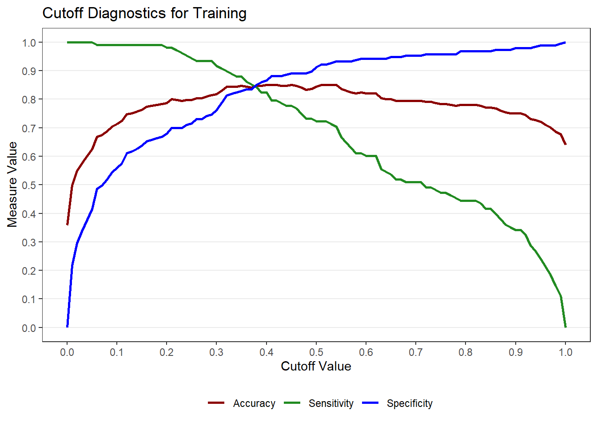
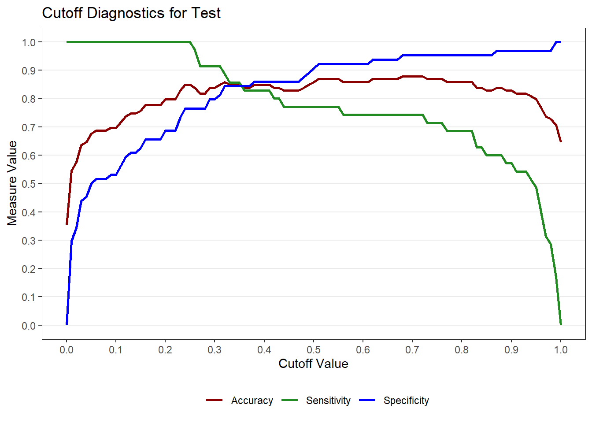
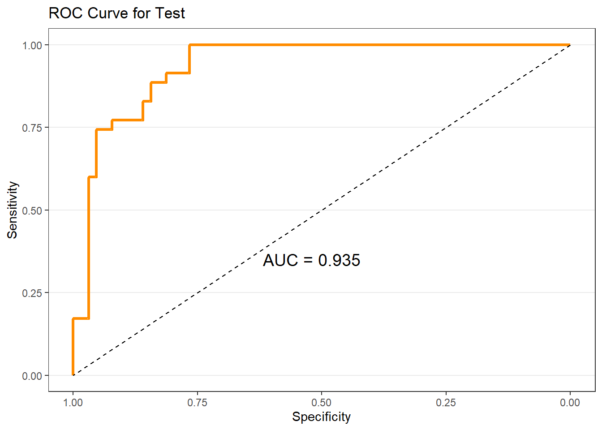
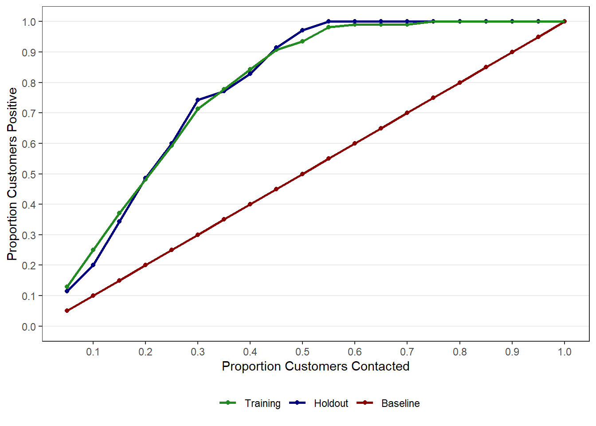
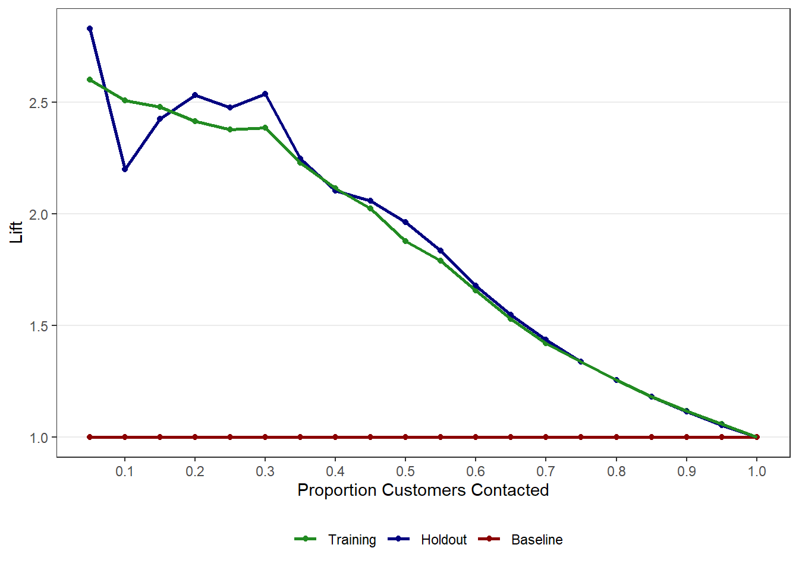
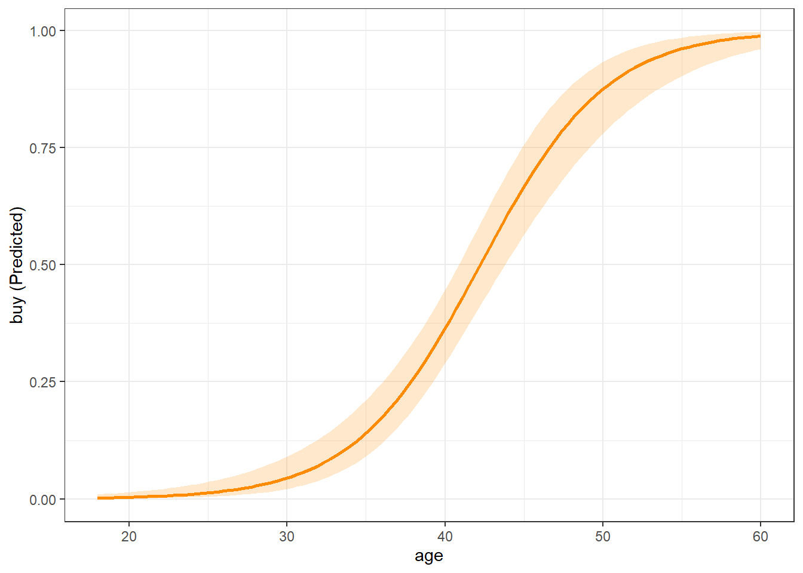
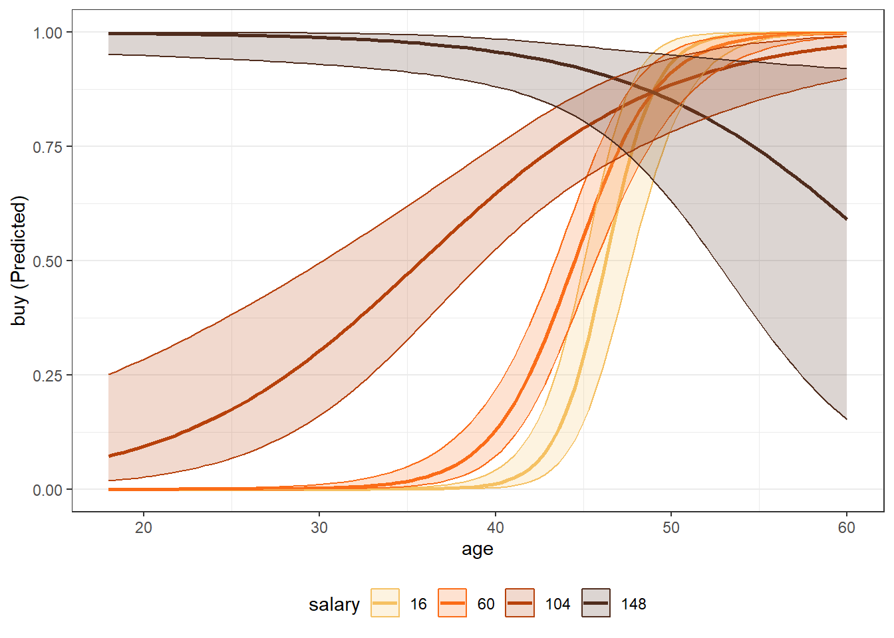

Chapter 9 Binary Logistic Regression
9.1 Why Logistic Regression in Marketing Analytics
Many important marketing decisions involve binary outcomes:
- Did the customer buy or not?
- Did the customer respond to a promotion?
- Did the customer churn?
In these cases, the dependent variable takes on only two possible values. A standard linear regression model is not appropriate because it can produce predicted values below 0 or above 1 and does not model probabilities correctly.
Binary logistic regression is designed specifically for situations where the outcome is binary. Rather than predicting the outcome directly, logistic regression models the probability that the outcome occurs.
From a marketing perspective, this is powerful: instead of simply predicting “buy” or “not buy,” we can estimate how likely a customer is to buy and then use those probabilities for targeting and decision-making.
9.2 The Direct Marketing Data
In this chapter, we use the directmktg dataset, which contains information on a direct marketing campaign.
The dataset consists of 400 prospects and the following variables:
userid: Unique identifier for each prospect
age: Prospect age in years
gender: Prospect gender (coded as provided)
salary: Prospect salary in thousands of dollars
buy: Purchase decision (“Yes” or “No”)
The marketing objective is:
Predict whether a prospect will purchase and estimate the probability of purchase.
9.3 Splitting Data into Training and Test Samples
To evaluate predictive performance, we split the data into training and test samples using splitsample() from the MKT4320BGSU package.
Usage:
splitsample(data, outcome = NULL, group = NULL, choice = NULL, alt = NULL,
p = 0.75, seed = 4320)- where:
datais the data frame to split.outcomeis the outcome variable used for stratification. Required when group isNULL. Optional when group is provided. For binary logistic regression, it is required.groupis NOT USED FOR BINARY LOGISTICchoiceis NOT USED FOR BINARY LOGISTICaltis NOT USED FOR BINARY LOGISTICpis the proportion of observations to place in the training set. Must be strictly between 0 and 1. Default is 0.75.seedis the random seed for reproducibility. Default is 4320.
The training data are used to estimate the model. The test data are reserved for out-of-sample evaluation.
9.4 Estimating a Binary Logistic Regression Model
We estimate a logistic regression model using glm() with family = "binomial". Remember, we want to estimate the model with the train data we just created.
Call:
glm(formula = buy ~ age + gender + salary, family = "binomial",
data = train)
Coefficients:
Estimate Std. Error z value Pr(>|z|)
(Intercept) -13.166094 1.621695 -8.119 4.71e-16 ***
age 0.250215 0.032095 7.796 6.38e-15 ***
genderFemale -0.406881 0.349811 -1.163 0.245
salary 0.040632 0.006742 6.026 1.68e-09 ***
---
Signif. codes: 0 '***' 0.001 '**' 0.01 '*' 0.05 '.' 0.1 ' ' 1
(Dispersion parameter for binomial family taken to be 1)
Null deviance: 392.94 on 300 degrees of freedom
Residual deviance: 210.68 on 297 degrees of freedom
AIC: 218.68
Number of Fisher Scoring iterations: 6The coefficients indicate how each variable affects the log-odds of purchase. The sign of each coefficient tells us whether the variable increases or decreases the likelihood of purchase.
For “nicer” looking results, the summ() function from the jtools package can be used.
| Observations | 301 |
| Dependent variable | buy |
| Type | Generalized linear model |
| Family | binomial |
| Link | logit |
| χ²(3) | 182.2574 |
| p | 0.0000 |
| Pseudo-R² (Cragg-Uhler) | 0.6231 |
| Pseudo-R² (McFadden) | 0.4638 |
| AIC | 218.6842 |
| BIC | 233.5126 |
| Est. | S.E. | z val. | p | |
|---|---|---|---|---|
| (Intercept) | -13.1661 | 1.6217 | -8.1187 | 0.0000 |
| age | 0.2502 | 0.0321 | 7.7961 | 0.0000 |
| genderFemale | -0.4069 | 0.3498 | -1.1631 | 0.2448 |
| salary | 0.0406 | 0.0067 | 6.0265 | 0.0000 |
| Standard errors: MLE |
9.5 Interpreting Odds Ratios
Because log-odds are difficult to interpret, we often convert coefficients to odds ratios. While we can do this by simply taking the natural exponents of the model coefficients (i.e., \(e^{coeff}\)), exp(coef(mod)), you can again use the summ() function from jtools and use the exp = TRUE option.
| Observations | 301 |
| Dependent variable | buy |
| Type | Generalized linear model |
| Family | binomial |
| Link | logit |
| χ²(3) | 182.2574 |
| p | 0.0000 |
| Pseudo-R² (Cragg-Uhler) | 0.6231 |
| Pseudo-R² (McFadden) | 0.4638 |
| AIC | 218.6842 |
| BIC | 233.5126 |
| exp(Est.) | 2.5% | 97.5% | z val. | p | |
|---|---|---|---|---|---|
| (Intercept) | 0.0000 | 0.0000 | 0.0000 | -8.1187 | 0.0000 |
| age | 1.2843 | 1.2060 | 1.3677 | 7.7961 | 0.0000 |
| genderFemale | 0.6657 | 0.3354 | 1.3215 | -1.1631 | 0.2448 |
| salary | 1.0415 | 1.0278 | 1.0553 | 6.0265 | 0.0000 |
| Standard errors: MLE |
An odds ratio greater than 1 indicates higher odds of purchase as the predictor increases. An odds ratio less than 1 indicates lower odds.
9.6 Predicted Probabilities
Logistic regression naturally produces predicted probabilities.
1 2 3 4 5 6
0.0004805918 0.0267022049 0.0109742358 0.0048495633 0.0170625797 0.0321671256 These probabilities are often more useful than hard classifications because they allow ranking and targeting. However, these probabilities are also used in evaluating model fit through the classification matrix. NOTE: You do not have to create these probabilities manually like shown above.
9.7 Classification and Cutoff Values
To classify prospects, we choose a probability cutoff (commonly 0.50). That is, a prospect/row is predicted to be “positive” if their predicted probability of the positive outcome is equal to 0.50 or greater. We use the logistic_classify() function from the MKT4320BGSU package to create classification matrices.
Usage:
classify_logistic(MOD, DATA, POSITIVE, CUTOFF = 0.5, DATA2 = NULL,
LABEL1 = "Sample 1", LABEL2 = "Sample 2", digits = 3, ft = FALSE)- where:
MODis a fitted binary logistic regression glm object (i.e., family = “binomial”).DATAa data frame for which the classification matrix should be produced. Usuallytrain.POSITIVEis the level in the outcome variable representing the positive outcome.CUTOFFis the pobability cutoff for classification (default = 0.5).DATA2is an optional second data frame (e.g., test/holdout sample).LABEL1is the label for the first data set (default = “Sample 1”)LABEL2is the label for the section data set, if provided (default = “Sample 2”)digitsis the number of decimal places (default = 3) to show.ftis a logical operator to return a nicer looking flextable (default = FALSE).
Classification Matrix - Sample 1 (Cutoff = 0.50)
Accuracy = 0.844
PCC = 0.540
No Yes Total
No 176 30 206
Yes 17 78 95
Total 193 108 301
Selected Statistics (Positive Class):
Sensitivity (TPR): 0.722
Specificity (TNR): 0.912
Precision (PPV): 0.821We can also evaluate classification performance on the test sample and get the output in a “nicer” table.
9.8 Choosing a Cutoff
The default cutoff of 0.50 may not be optimal. The cutoff_logistic() function helps visualize tradeoffs between sensitivity, specificity, and accuracy.
Usage:
cutoff_logistic(MOD, DATA, POSITIVE, LABEL1 = "Sample 1",
DATA2 = NULL, LABEL2 = "Sample 2")- where:
MODis a fitted binary logistic regression model (glm with family = “binomial”).DATAa data frame for which the classification matrix should be produced. Usuallytrain.POSITIVEis the level in the outcome variable representing the positive outcome.LABEL1is the label for the first data set (default = “Sample 1”).DATA2is an optional second data frame (e.g., test/holdout sample).LABEL2is the label for the section data set, if provided (default = “Sample 2”).
cut <- cutoff_logistic(MOD = mod, DATA = train, DATA2 = test, POSITIVE = "Yes",
LABEL1 = "Training", LABEL2 = "Test")
9.9 ROC Curve and AUC
The ROC curve evaluates model discrimination across all possible cutoffs. The Area Under the Curve (AUC) summarizes overall classification performance. To get the ROC curve, use the roc_logistic() function from the MKT4320BGSU package.
Usage:
roc_logistic(MOD, DATA, LABEL1 = "Sample 1",
DATA2 = NULL, LABEL2 = "Sample 2")- where:
MODis a fitted binary logistic regression model (glm with family = “binomial”).DATAa data frame for ROC computation. Usuallytrain.LABEL1is the label for the first data set (default = “Sample 1”).DATA2is an optional second data frame (e.g., test/holdout sample) (default = NULL).LABEL2is the label for the section data set, if provided (default = “Sample 2”).
Setting levels: control = No, case = YesSetting direction: controls < casesSetting levels: control = No, case = YesSetting direction: controls < cases$sample1
$sample2
9.10 Gain and Lift Charts
Gain and lift charts are especially useful for targeting decisions. These plots (and tables) show how much better the model performs relative to random targeting. To get the gain and lift charts, use the gainlift_logistic() function from the MKT4320BGSU package.
Usage:
gainlift_logistic(MOD, TRAIN, TEST, POSITIVE)- where:
MODis a fitted binary logistic regression model (glm with family = “binomial”).TRAINa data frame with the training data (usuallytrain).TESTa data frame with the test/holdout data (usuallytest).POSITIVEis the level in the outcome variable representing the positive outcome.

# A tibble: 20 × 3
`% Sample` Training Holdout
<dbl> <dbl> <dbl>
1 0.05 0.130 0.114
2 0.1 0.25 0.2
3 0.15 0.370 0.343
4 0.2 0.481 0.486
5 0.25 0.593 0.6
6 0.3 0.713 0.743
7 0.35 0.778 0.771
8 0.4 0.843 0.829
9 0.45 0.907 0.914
10 0.5 0.935 0.971
11 0.55 0.981 1
12 0.6 0.991 1
13 0.65 0.991 1
14 0.7 0.991 1
15 0.75 1 1
16 0.8 1 1
17 0.85 1 1
18 0.9 1 1
19 0.95 1 1
20 1 1 1 
# A tibble: 20 × 3
`% Sample` Training Holdout
<dbl> <dbl> <dbl>
1 0.05 2.60 2.83
2 0.1 2.51 2.2
3 0.15 2.48 2.42
4 0.2 2.42 2.53
5 0.25 2.38 2.48
6 0.3 2.38 2.54
7 0.35 2.23 2.25
8 0.4 2.11 2.10
9 0.45 2.02 2.06
10 0.5 1.88 1.96
11 0.55 1.79 1.83
12 0.6 1.66 1.68
13 0.65 1.53 1.55
14 0.7 1.42 1.43
15 0.75 1.34 1.34
16 0.8 1.25 1.25
17 0.85 1.18 1.18
18 0.9 1.11 1.11
19 0.95 1.06 1.05
20 1 1 1 9.11 Margin Plots with easy_mp()
Coefficients are difficult to interpret directly. Marginal effects plots help visualize how predictors influence purchase probability. As with linear regression (see Section 8.6), we use the easy_mp() function from the MKT4320BGSU package to help create the margin plots.

We can also examine categorical predictors.

We can also examine interactions.
mod_int <- glm(buy ~ age * salary + gender, data = train, family = "binomial")
mp_gender <- easy_mp(mod_int, focal = "age", int="salary")
mp_gender$plot
9.12 Putting It All Together
Binary logistic regression provides a complete framework for:
- Predicting purchase probabilities
- Classifying prospects
- Evaluating models using multiple metrics
- Supporting targeting decisions
No single metric tells the whole story. Marketing analysts must choose evaluation tools that align with business objectives.
9.13 What’s Next
In the next chapter, we shift from prediction to segmentation. We will use cluster analysis to:
- Identify distinct customer segments based on observed attributes
- Understand how customers naturally group together
- Support positioning, targeting, and strategy development
- Translate data-driven segments into actionable marketing insights
Where logistic regression answers questions like “Who is likely to buy?”, cluster analysis addresses questions such as:
- What types of customers do we have?
- How are customers meaningfully different from one another?
- How many segments make sense from a managerial perspective?
The next chapter introduces several clustering approaches, discusses how to choose the number of clusters, and emphasizes interpretation and managerial usefulness over purely technical solutions.